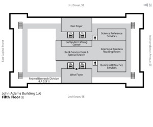

I had moment of early morning, jump out of bed and write it down, inspiration the other day.
It was the equation of history.
The Present = (Past Realities) + (Hopes for the Future)
The present, in very simple terms, is a combination of things that have already happened and what is hoped to happen in the future.
History is the study of this equation as it relates to individuals, corporations, governments, nations, etc.
Think about how you think about yourself, for example. You might be like me and when you think about yourself you have this knowledge of things you’ve done, seen, and heard. Then you compare that with how you think you should be.
A historical study does the same thing. It tries to figure out what the present is for any given time period, event, or issue by putting together the past events and the ideals that people left behind.
Anyhow, that’s a quick, not well thought out explanation of a very early morning inspiring thought. As those types of thoughts go, they often don’t pan out when brought under the light of a conscious brain.
I taught the third hour combined Young Men/Young Women lesson yesterday. It went really well. I gave plenty of opportunities for the kids to make connections and observations between the clay and their lives.
Pottery
The Great Coming Battle – 5th Sunday lesson for combined Young Women and Young Men
Preparation Read Elder Melvin J. Ballard, “Struggle for the Soul,” New Era, Mar 1984, 32 and Boyd K. Packer, “The Instrument of Your Mind and the Foundation of Your Character,” fireside address given at Brigham Young University on 2 February 2003 (available here: http://speeches.byu.edu/reader/reader.php?id=478)
Index cards with main quotes printed on them. Hide them on the underside of the chairs before class starts.
Two or three index cards with a picture of pottery (ie. a cup or bowl) on them.
A small container of clay for each student.
Read the following scriptures: 2 Nephi 2:25; 2 Nephi 28:7-8, 19-22; Alma 12:24; Alma 34:32-34; 3 Nephi 12:48; Ether 12:27; Moroni 7:16; D&C 88:14-22; D&C 89; D&C 93:27-34; D&C 138:17, 50;
Purpose
Each of us are in the midst of the greatest battle in the universe. Each of us are battling for the salvation of our soul. Satan is real and is trying new and different tactics than from when the Church was first established. He is now working on the Saints individually, and tempting us through the medium of our bodies, our natural desires. We have the power to choose who we listen to, Jesus or Satan. We can shape our lives however we want, but it is easier to change while we are young, therefore, this life is the time to repent (see Alma 34:32-34).
Object lesson
Our lives are like clay, easily molded when young, but increasingly harder to shape and change as time goes on. When we die, it is like the clay has been fired in a kiln, and it is almost impossible to change. We must be continually shaping ourselves to be in the form Jesus set forth. Repentance is the process of letting Jesus reshape our clay into the form He has in mind for us.
That certain people received index cards with pictures or words of instruction is symbolic of how God calls prophets to guide and instruct the people of the world through revelation.
I finished the paper in record time. I was even able to edit it a few times, and didn’t even touch it over the weekend. The course intention is for the paper to include more primary research, but my dissertation advisor persuaded me (and the course instructor) that it would be best to make it a more historiographical look at what has been done on the subject and place it in historical importance. So it turned out to be more an introduction to the dissertation than a researched chapter.
I’ve been struggling to find a topic or study practice to keep my studies coherent. I was prompted to start reading “Jesus the Christ” by James E. Talmage.
I only have a copy in German, from my mission, so this will be interesting (unfortunately my German skills have deteriorated). Of course it is available in many languages for free on Project Gutenberg. So I may have to reference that quite often.
Talmage makes seven points from the Church of Jesus Christ of Latter-day Saints that are specific to the understanding of Jesus Christ and which are different than any other church’s beliefs.
Christ’s mission extends before and after his earthly life.
He belonged to the Godhead before his life on earth.
He was literally the son of a God and a mortal mother
His physical death and physical resurrection really did happen, and as a result the power of death has been overcome (much more to be written on that later, but basically, because Jesus had the ability to make his spirit and body reunite after separating through death, he will give everyone who has died the power to reunite their spirit and body. The LDS Church, I think, is unique in believing this will happen for every single person who lived on the earth.)
The Atonement is a reality, it really did happen, and anybody who follows Christ’s gospel will be able to use it.
Jesus’ power (the priesthood) and his church are restored in this time period, which is called the “dispensation of the fullness of times” in the scriptures
Jesus Christ will really come again in a relatively short time, and will personally and physically be the king and Lord of earth.
Well, my translations aren’t that bad. Each of those points could be a book… or at least a nice blog post. üôÇ
To make this post not so boring, here’s a couple of pictures I put in my paper.
8th Air Force bombing Marienburg, Germany
Limestone quary.
After meeting with my dissertation and adviser and prof., we decided to make the paper more focused and helpful for the dissertation. So the plan is now to have this become an introductory chapter. I have done plenty of reading on Albert Speer, and digging through some archival documents, and that will still be helpful and apply to this paper, but the focus will be different.
I definitely need more books, but the ones listed in the last post are a good start.
Oh, man. A lot has transpired since I wrote the above, three weeks ago. The title still applies, and even more so. I turned in my first draft with good reviews from the class, but significant changes required from my dissertation advisor. So much to write about, so many tips and tricks I’ve picked up.
Tips for writing a paper that I should have known already
So, first of all meet with your professors often. This is essential to stay on target. Meet at every step: beginning and deciding on the topic; bibliography; outline; first draft; second draft; final draft.
Make an outline! Man, why did I not do this more often in the past? This was a life saver in helping me formulate thoughts, figure out what was important and what was just an interesting tangent. One of the best benefits of an outline, I found, was that it made the reading more focused. Granted, it took a book or two to figure out what was important about the topic, but making the outline made reading the books easy. I didn’t have to plod through each book, cover to cover. Instead I sought out the parts of the book that helped fill in the outline. Awesome!
Peer review. This was a required part of the course. We all got to read another classmate’s paper and critique/review it. It was neat to see how the reviewer always had some neat aspect or idea that really helped flesh out the topic even more. (I’ll blog about the awesome and pivotal ideas that Mark gave about my paper.)
So there are three good tips. Now I have some more-than-minor rewrites and additional research to do for the version of the paper for class, and some major rewriting and researching to do for the version for my dissertation advisor.
I went back to the Archives last week, for another go at finding documents. I left home at 7am and got there at 9am, this time. I was able to look through 9 rolls of film and get 300 pictures of documents (with some duplication and multiple pictures for some large documents). I had packed a nice lunch and snacks this time, but was called by my wife as I boarded the bus that morning, and she told me I forgot my food! Well, I knew where to get cash, and when to get food, so I was just fine. A big bowl of fruit and yogurt when I got there because the two hour ride made me hungry. And then two $1 hamburgers for lunch! I got to scan and study until 6pm when my family picked me up as we were staying at family in MD.
Anyhow, on to the history part… So I devised an awesome way to track the record, roll, and frame numbers while taking pictures. Again the documents were too large to capture the frame number and all of the document. Before getting to that, though, I checked just about every microfilm scanner in the room to see how well it displayed the images. It turns out that the one I used last time is the best.
So I got all set up, looked through notes and started to build a better spreadsheet to track notes with. I had just put in all of the roll numbers I would need when tragedy struck. I did an undo in my Zotero note, and it wiped out all of my note with the frame numbers I would need! I was in shock! I sat there dumbfounded for a bit, and almost swore at the Zotero programmers who didn’t for see my need for a redo button, but since I know them pretty well, I decided not to be angry. They’re good kids. After the shock wore off, I looked through the indexes at the roll numbers and found which frames I would need, and a few extra. So then I got to work.
At first I put the box that the roll of microfilm came in on top of the scanner. That got the record and roll numbers in the shot, but it still required two pictures to get the frame number and all of the document. Then I tore up a note card and wrote the info on small pieces and put that on the screen. The papers soon got in the way, so I hit upon the best idea. I hung the papers from the screen, at the bottom, and could now get all of the document and all of the necessary info! Once I found a set of documents, I became quite adept at taking a picture, scrolling to the next document and putting up the next sequential number. I could take about 15 pictures in a minute or so. It was ingenious! I didn’t get to look at all of the frames that I wanted to, but I think I have enough.
Someday this will end
So now on to the historiography. I have some documents, I have some books and articles, it’s time to find out what exactly I’m writing about and what other historians have said about it already. Seems easy enough. So what is it exactly I want to write about? That’s actually a difficult question. I never really found any books or articles on how the Nazi leaders came to want to bury the factories, or even the process of it. Fortunately, I did find a few documents at the Archive that reference it. So what is it that I can do? What I have decided that I will actually be able to do, is to look at two Nazi officials and how they came to the decision to bury the factories. I’ll look at Albert Speer (Head of the Reich Ministry for Armaments and War Planning) and Heinrich Himmler (Head of the Nazi Schutzstaffel – SS). Both of these individuals jockeyed for the right to control how, where, and when to build the tunnels.
Now it’s time to build a framework of books and articles around that topic. As I looked over the literature I had already selected, I was dismayed to see that most of them aren’t going to work. They are great for later, when I look at the economics of the Third Reich and other aspects I’ll need to cover in the dissertation, but not for this paper. So it was back to the grindstone of finding articles and books. I have several on Albert Speer, none on Himmler. The books on Himmler focus on his role in the Holocaust, which is not particularly what I need for this assignment. Many of the documents from the Archive are from Himmler’s records, so I should be able to piece enough together from that. So here’s what I have to read and write a historiography about this weekend:
Willi A Boelcke, Deutschlands Rüstung Im Zweiten Weltkreig (Frankfurt am Main: Akademische Verlagsgesellschaft Athenaion, 1969).
Joachim C Fest, Speer: The Final Verdict, 1st ed. (New York: Harcourt, 2001).
Hans Gerth, “The Nazi Party: Its Leadership and Composition,” The American Journal of Sociology 45, no. 4 (January 1940): 517-541.
G Graber, History of the SS (New York: D. McKay, 1978).
A. C Grayling, Among the Dead Cities: The History and Moral Legacy of the WWII Bombing of Civilians in Germany and Japan, 1st ed. (New York: Walker & Co, 2006).
Neil Gregor, Daimler-Benz in the Third Reich (New Haven, CT: Yale University Press, 1998).
Peter Hayes, Industry and Ideology: IG Farben in the Nazi Era (Cambridge [Cambridgeshire]: Cambridge University Press, 1987).
Jeffrey Herf, Reactionary Modernism: Technology, Culture, and Politics in Weimar and the Third Reich (Cambridge [Cambridgeshire]: Cambridge University Press, 1984).
John H. Herz, “German Administration Under the Nazi Regime,” The American Political Science Review 40, no. 4 (August 1946): 682-702.
Paul Jaskot, The architecture of oppression : the SS, forced labor and the Nazi monumental building economy (London; New York: Routledge, 2000).
Nicholas Kaldor, “The German War Economy,” The Review of Economic Studies 13, no. 1 (1945): 33-52.
Gerald Kirwin, “Waiting for Retaliation РA Study in Nazi Propaganda Behaviour and German Civilian Morale,” Journal of Contemporary History 16, no. 3 (July 1981): 565-583.
Robert Koehl, The SS : a history, 1919-45 (Stroud: Tempus, 2000).
Arnold Krammer, “Fueling the Third Reich,” Technology and Culture 19, no. 3 (July 1978): 394-422.
R. J. Overy, “Transportation and Rearmament in the Third Reich,” The Historical Journal 16, no. 2 (June 1973): 389-409.
R. J. Overy, “Hitler and Air Strategy,” Journal of Contemporary History 15, no. 3 (July 1980): 405-421.
R. J. Overy, “Mobilization for Total War in Germany 1939-1941,” The English Historical Review 103, no. 408 (July 1988): 613-639.
Bertrand Perz, Projekt Quarz: Steyr-Daimler-Puch Und Das Konzentrationslager Melk, Industrie, Zwangsarbeit und Konzentrationslager in O?sterreich (Wien: Verlag für Gesellschaftskritik, 1991).
Science in the Third Reich, German historical perspectives 12 (Oxford: Berg, 2001).
E. R Zilbert, Albert Speer and the Nazi Ministry of Arms: Economic Institutions and Industrial Production in the German War Economy (Rutherford, [N.J.]: Fairleigh Dickenson University Press, 1981). 
Last Friday was archival research day. I spent the whole day at the National Archives at College Park. Well, let me rephrase that, I spent half the day getting there and back, and half the day in the archives.
The only way for me to get there was to take public transportation. I took the Metro bus from my house to George Mason University. From there I took the CUE bus to the Metro Station. One change on the Metro in DC and then I was at University of Maryland. Then it was another bus to the Archives. That wasn’t so bad. It only took THREE HOURS!!! After getting my researchers card, I went to the fifth floor, got a quick tour on how to use the microfilm readers from the very helpful staff, and jumped right in to what I thought would provide the best sources.
After several hours of looking at microfilm I decided it was time to eat lunch, it was already 3PM. Everywhere I looked were reminders that the copy machines in all of the research rooms ONLY TAKE DEBIT CARDS, NO CASH! Well, I thought, I’ll just run down to their cafeteria and get some lunch. What? What’s that? The Archives are open until 9PM but the cafeteria closes at 2PM?!?!? Oh, they have some stuff to buy, still, like milk, and cake, and muffins, and one last bowl of fruit. Fine, I’ll get the fruit, milk, and chips. Yes, I’m ready to pay now. Oh, you only take CASH?!?!? You’ve got to be freakin’ kidding me! Fine! I’ll use my last two dollars in cash to buy a danish and grape soda from the vending machines! Can’t use cash anywhere else, and can’t figure out how to let the cafeteria use debit cards. Now that’s some fine government work for ya.
National Archives at night
So after that huge irritation, I went back to searching through the archives. I ended up spending 6 hours looking through 10 rolls of film. After reviewing the 150 pictures I took of the documents, only 2 of them apply to my topic.
So here are some things I learned while at the National Archives at College Park.
Leave much earlier in the morning. It takes forever to get there. Half the day was travel, which was good reading time. But remember to have paper and pencil handy or the reading goes to waste.
Take food. They have free lockers, and microwaves. If you need to eat their food, do it before 2 PM.
Figure out what rolls of film, and approximate frame numbers you need before you go. Fortunately, I had done that. It saved hours of time. I only got through half of the rolls I need to look at. Fortunately there were some good indexes for the film I need. You can find them at the Archive’s site to purchase copies of film. Type in a keyword in the index’s title. Then click on the index you want. Usually there is a PDF version of the index you want. And best of all… The PDF is SEARCHABLE!¬† Man, that saves a bunch of time.
Figure out how you want to make copies of the microfilm. The College Park location doesn’t have the ability to scan the documents to a computer yet. You can print them on paper, though. But what works the easiest is to just take a picture of the screen with your digital camera.
Figure out a plan for referencing where the copies came from. It does you no good to take a bunch of pictures or make a bunch of paper copies if you don’t know which roll of film and which frame the document came from. I thought I had a pretty decent system. Take a picture, make a note in a spreadsheet which roll, frame, and a bit about the document. Looking back, the notes I made were much too vague. A much better system is to write the Record number, roll number and frame number on a piece of paper and tape it to the screen next to the document. Taking a picture automatically records that info right next to the document. You have to get paper and pencil from the Archives, hopefully they have tape too.
My next trip is this Friday. I won’t have the whole day, but with one day of experience under the belt, I think the next trip will go more smoothly. Now I just need to get some sources!
One last thing. Make a note of all of the interesting things you see, but don’t need. You might want to come back to those later. I saw a decree from Heinrich Himmler, outlawing the word “Partisan”, and some sweet pics of a Nurfl√ºgel-Segelflugzeug Horton II (below).
Yesterday in Priests Quorum, we were discussing some attributes found in the “For the Strength of Youth” pamphlet. Serving others came up as a way to show gratitude, one of the attributes we need to develop. It struck me then, as it has before, that serving others is the key to becoming like God. I expressed this feeling to the boys, too.
I said to the boys, “Do you want to know what the key is to be a God?” They of course did. I told them it was written on the board. I told them to look at Christ’s life. For whom did he do every single thing that he did in life? It was for others. All of the miracles, the healing, the feedings, the teachings, were for the benefit of others. Only one time is it recorded what his desires were. That was in the Garden of Gethsemane, as he was to atone for the sins of all people. He said, if it be at all possible, I don’t want to do this, BUT I will do what somebody else wants me to, I’ll do the will of God.
Likewise, we know the purpose of God’s existence. It’s found in Moses 1:39, “For behold, this is my work and my glory-to bring to pass the immortality and eternal life of man.” The whole purpose of God, the basis of his glory, his power, his right to be a God, is based in others. His power comes because he is completely involved in helping his children. The key to becoming a God is to forget yourself and serve others.
I met with my Dissertation adviser last week, and we decided that the topic I had picked really had nothing to do with my dissertation. I don’t know why, but I had always been afraid to just bite off a chunk of the dissertation and give that a go. But after talking with Prof. Deshmukh, it should be quite doable.
Albert Speer at Nuremburg Trials. Image from Wikimedia Commons.
So the dissertation is the Nazi tunnels, and this paper will be an important part of that. One of the two organizations that looked into, and actually built some of the planned tunnels was the Reichsministerium für Rüstung und Kreigsproduktion (RMfRuK, Reich Ministry for Armaments and War Production). This group was headed by Albert Speer, who incidentally was a very interesting man. Anyhow, my paper will now look at the Reich Ministry for Armaments and War Production. It will kind of be an historical overview of the organization and several key players in the building of the tunnels.
As we were discussing each others papers in class last night, the question kept coming around to what is the so what question, or why is this important for us to know. I went last, so we were all ready to just get out of class, and we didn’t really get to that part of mine. Which I’m kind of glad for, since I don’t really have one. Why is this important for us to know? Because it helps us understand the tunnel? Does that work?
At any rate, such is my new topic, it applies directly to my dissertation, and will be part of a chapter that discusses the organizations involved in building the tunnels.
US National Archives at College Park. Image from Wikimedia Commons
This, of course, means that all of my sources and bibliography need to be redone. I was a bit worried about sources, which is probably why I didn’t want to do the topic. Well, it turns out that Prof. Deshmukh has copies of the indexes to the Guides to German Records Microfilmed at Alexandria, VA, which are the captures Nazi documents housed at the U.S. National Archives. It just so happens that there are over 1000 rolls of microfilm that reference the RMfRuk (with over 190 being the records of this organization directly)! What a find. Now my extra hours will be spent going over the hundreds of pages of the indexes looking for references to Speer, Himmler, Kammler and tunnels. And then it’s off to the National Archives in College Park, Maryland to look at the actual documents. I have a lot to do before the April 12 deadline of the first draft (which should be as complete as possible).
So, if you didn’t get it yet, here are the steps to doing such a research paper:
Find an interesting topic. It has to hold your attention, or you will be miserable.
Talk to your Professors. They’ll point you on the right track for all kinds of things (sources, topic focus, secondary literature, encouragement, etc).
Find the sources. Best is to find an index or something that describes the sources. For my example, before I even go to the National Archives, I will have a list of specific rolls of microfilm I need, with particular documents I want to look at on the films. Hopefully my bank account can sustain the copies needed, or better yet, I’ll be able to make digital copies.
Find secondary literature about any aspect of your topic. In my case I need books and articles about Albert Speer, the RMfRuk, Nazi organizations, industrial and economic studies of Nazi Germany, etc.
Look the the secondary material for insights, information, and most importantly, more sources. I’m now see how important footnotes are, and can see what resources are most often used, what works are most often cited, and who makes what arguments. Harvesting the footnotes for sources is integral in historical research.
Gather information from primary and secondary sources and make an outline of the argument.
Write, write, write, and then do some more writing.
So, I am back to step 3, finding the sources. I’m going to the Archives on Friday. Wish me luck!
So I finally went to the Library of Congress for actual archival research. They have about ten years worth of the ‘Kosmos’ magazine from 1919-1927 that I will look at for my paper. It was really fun. The whole family went down. Jess and I both got new LoC cards, then they went to a museum and I went to read old books.
Up until this point my big worry had been in finding some primary documents. Now that I have them, I don’t know what to do with them. I proposed this dilemma to the class last night and they had some great ideas on how to use the source. I also have a great article to use as a template, in that the historian, Nick Hopwood, looks at the ‘Urania’ magazine used by the socialists in Weimar Germany. (Nick Hopwood, ‚ÄúProducing a Socialist Popular Science in the Weimar Republic,‚Äù History Workshop Journal, no. 41 (Spring 1996): 117-153.)
Reading this article is my goal for tonight’s short two hour study session. I’m planning on going back to the LoC on Thursday to get some more data. But here are the ideas my classmates had:
look at a particular author that continually prints
look at one science/tech, follow how Nazi magazines and others treat the topic
look at old and new to see if they deal with a subject
what happened to the authors of the socialist papers
study what kind of articles are being printed, what topics come up continually
what happened to the authors/editors of the socialist papers, did they go to Dachau, were the scientists who published put to work in their fields?
narrow down the so what question. What question are you trying to answer, that will help you know what to look for in the sources.
Library of Congress - John Adams Building - 5th floor
What the issue really boils down to is that I need to narrow my topic. I can’t have my topic be ‘science and technology in Weimar Germany’. That’s way too broad. Too broad for a dissertation, even. I like the idea of focusing on one particular science or technology, and see how it is portrayed throughout the Weimar Republic, and even into post-Weimar Germany. Ideally, it aligns with my dissertation topic of Nazi tunnels.


{kind=link}
{kind=link}
{kind=link}
{kind=link}
{kind=link}
{kind=link}